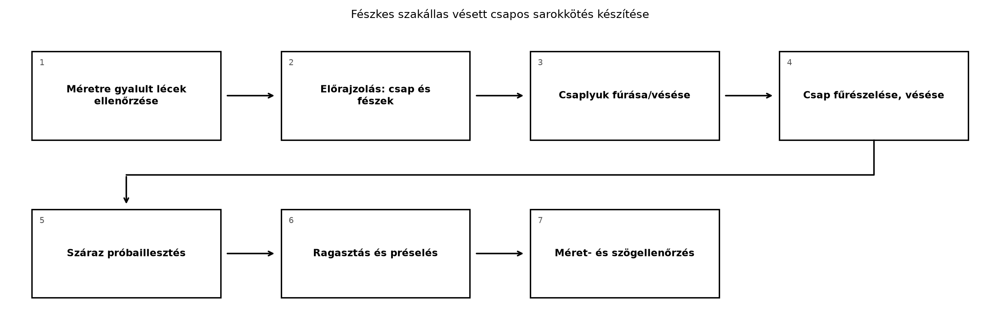

A konyhaasztal lábánál a kötés meglazult, az ablakkeret sarka elmozdult, a szék támlája nyikorog. Ilyenkor a hibás sarokkötés miatt az egész szerkezet instabillá válik. A keretkötéseknek egyszerre kell ellenállniuk húzásnak, hajlításnak és a fa időben változó nedvességmozgásának. Az ollós csap egy jó megoldás, de ahol nagyobb igénybevétel van – például ajtókeretnél, asztalnál, széknél –, ott a vésett csap ad megbízható, merev kötést. A szakállas változat különösen jól húz ellent a fészekből kihúzó erővel szemben.
Képzelj el két, egymásra merőleges tömörfa lécet, például 60 mm széles és 35 mm vastag bükkfa anyagból. Az egyik lécre – a csapos elemre – azt mondjuk: a végén csap van; a másik lécre – a fészkes elemre – azt mondjuk: az oldalában csaplyuk, azaz fészek van. A csap behatol a fészekbe, ragasztással, esetleg ékeléssel rögzül. A csap két oldalán meghagyott váll (vállrész) a fészkes elem felületére támaszkodik, és meggátolja a csavarodást, illetve a csap túlzott elfordulását. (A címben szereplő hevederek külön, a kötést kívülről erősítő lécek vagy lemezek; ebben az alfejezetben a csap melletti anyagrészt vállnak vagy vállrésznek nevezzük.)
A szakállas csap jellegzetessége, hogy a csap sarok felőli oldalán a csapnál rövidebb nyúlvány (szakáll) marad. A szakáll kitölti a keret hornyát vagy falcát, megakadályozza a csavarodást, és a fészkes léc vége zárt marad, nem hasad ki. Húzásra a ragasztott csapfelület dolgozik; a kötés nem „húzza be magát”.
A T-kötésnél az egyik elem végét egy másik elem oldalához csatlakoztatjuk. Az átvésett csap azt jelenti, hogy a csap a fészkes elem teljes anyagán átmegy, a túloldalon kilátszik, és ott ékekkel feszíthető meg.
Definíció. Vésett csapozás: olyan asztalos kötés, amelyben az egyik elem végén kialakított csap a másik elembe vágott csaplyukba (fészek) hatol be. A csapot ragasztással, szorítással, átmenő csap esetén gyakran ékeléssel rögzítjük. A kötés akkor dolgozik jól, ha a csap és a fészek falai pontosan illeszkednek, és a vállak rései minimálisak.
Definíció. Fészkes vésett csap: olyan csap, amely a fészkes elem teljes szélességén nem halad át; a csaplyuk alja zárt. A csap hossza ezért kisebb a fészkes elem szélességénél. A csap vége nem látszik. Átmenő vésett csap: olyan csap, amely a fészkes elem teljes szélességén áthalad; a csap homlokfelülete a túloldalon megjelenik.
Definíció. Szakáll: a csap sarok felőli oldalán meghagyott, a csapnál rövidebb nyúlvány; hossza kb. a keret hornyának mélysége. Célja, hogy a fészek a léc végén zárt maradjon, a kötés ne csavarodjon, és kitöltse a keret hornyát (ellenőrizendő: faipari szerkezettani szakkönyv, műhelyi rajz).
Definíció. Csapváll: a csapos elem azon felülete, amely a csap mellett a fészkes elem külső felületére támaszkodik. Vállrész: a csap vastagsága mellett kétoldalt meghagyott anyagrész, amely a csapra merőleges irányban merevíti a kötést. A két vállrész együttesen határozza meg a csap helyét a léc vastagsági keresztmetszetén belül. (A heveder külön léc.)
Definíció. Átvésett T-kötés: olyan T alakú kötés, amelyben a T függőleges elemének csapja a vízszintes elem teljes vastagságán átmegy, és a túloldalon ékeléssel, illetve ragasztással rögzül.
Szabály. A csap vastagsága tömörfa keretkötésnél általában az anyagvastagság kb. harmada. Például 35 mm vastag lécnél kb. 11–12 mm. A csap és a fészek közé ragasztóréteg kell, ezért a fészek szélessége a csapvastagságnál jellemzően 0,1–0,2 mm-rel nagyobb. Ez tájékoztató érték; az illesztést az anyag, a ragasztó és a műhelyi gyakorlat szerint kell meghatározni (ellenőrizendő).
Szabály. Fészkes csapnál a fészekmélységet úgy válasszuk, hogy a csap a fészkes elem szélességének kb. kétharmadáig érjen, de a csap vége előtt maradjon legalább kb. 10–15 mm ép anyag. A csap hossza a fészekmélységnél 1–2 mm-rel legyen rövidebb, hogy a ragasztófölösleg elférjen, és a csap ne érje fel a fészek fenekét. Tájékoztató szabály; a pontos méretet a szerkezeti rajz adja meg.

A fészek készítése kézi szerszámmal pontos előrajzolást és türelmet kíván.
Előrajzolás. A fészek helyét a fészkes elem mindkét oldalán bejelöljük. A fészek hossza a csap szélességével egyezik, szélessége a csap vastagságával azonos. A szakállas kötésnél a fészek a fészkes léc végétől a szakáll hosszával beljebb kezdődik.
Lépések kézi fészekvéséshez:
A kézi fészekvésés mozdulatsorát és a véső helyes fogását a következő képsor mutatja (oldalnézeti metszet a fészek hosszában).
Hiba. Ha a véső élével a rajzvonalon belülről vágunk, a fészek szélei szálkásak, rongyoltak lesznek. A rajzvonalat a hulladék oldalán kell megtartani.
Négyszöglyukvéső. A négyszöglyukvéső gép üreges vésőtokkal és belső csigafúróval négyszögletes fészket készít. (Nem tévesztendő össze a hosszlyukfúróval, amely oldalazó marószárral lekerekített végű hosszlyukat mar; ehhez a csap éleit le kell kerekíteni.) A munkadarabot a gép asztalán leszorítjuk, a fészek helyét ütközővel állítjuk. A mélységet mélységi ütközővel állítjuk be. Az előtolást egyenletesen végezzük. A gép alkalmas fészkes és átmenő furatok készítésére is, de átmenő furatnál alátétet kell használni, hogy a kilépő oldal ne szakadjon ki.
Láncmaró. A láncmaró láncos marófejjel gyorsan készít téglalap alakú fészkeket, és alkalmas csapok marására is. A láncmaró veszélyes gép: a védőburkolatnak mindig zárva kell lennie, a munkadarabot szorítóval, tolófogantyúval kell biztonságosan vezetni. Kéz közel ne kerüljön a marólánchoz.
Az ábra a két gép működési elvét mutatja: a négyszöglyukvéső álló, négyszögletes üreges vésőtokja belsejében csigafúró forog, a láncmaró a vezetőlapon körbefutó maróláncot süllyeszti a darabba. Az első sík aljú, szögletes, a második ívelt aljú fészket ad.
Gépbiztonság. A művelet betanított, felügyelt tanulónak szól; védőberendezés nélkül, egyedül, fáradtan ne végezd. Négyszöglyukvéső és láncmaró használata előtt ellenőrizd a szerszám rögzítését, az elszívást, a vészleállítót és a munkadarab-szorítást. Viselj védőszemüveget, hallásvédőt és szorosan testhez álló ruhát.
A csapot a csapos elem végén alakítjuk ki. A vállrészek a csap mellett megmaradó anyagrészek. A csap készítése kézzel:
Tilos a csapot fűrészelés után kalapáccsal a fészekbe verni, mert a rostok összenyomódnak, a fészek megrepedhet. Ha a csap szorul, vékony forgácsvétellel igazítsuk, ne erőltessük.
Csapozó marógép. A csapozó marógép kétoldali vágófejjel egyszerre munkálja meg a csap két oldalát, így a csapvastagság és a vállak nagyon pontosan, ismételhetően készülnek. A csap hosszát ütközőkkel, a vastagságot asztalmagassággal állítják. A lécet stabilan rögzítjük, a marófej védőburkolatát lezárjuk.
Láncmaró vagy asztalos maró. A láncmaró is tud csapot vágni; az asztalos maró gép megfelelő alakos szerszámmal, sablonnal szintén alkalmas csapmarásra. A vállrész-vonalakat itt is a rajz szerint kell tartani. Az alsómarónál a munkadarabot tolófa vagy szorító vezeti; kéz a szerszám közelében nem lehet.
Gépbiztonság. A művelet betanított, felügyelt tanulónak szól; védőberendezés nélkül, egyedül, fáradtan ne végezd. Használd a marófej védőburkolatát, a vészleállítót, az elszívást, és soha ne dolgozz ékszerrel, órával, laza ruházattal a forgó szerszám közelében.
1. példa – csapvastagság és vállrészek. Adott egy 35 mm vastag keretléc. A csapvastagságot a harmadolás szabálya alapján választjuk:
A gyakorlatban válasszunk 12 mm-es csapvastagságot. A vállrészek vastagsága:
Ellenőrzés: ; az osztás pontosan összeadódik. ∎
2. példa – fészekmélység és csaphossz. Adott egy 70 mm széles fészkes elem. A fészekmélység a szélesség kétharmada körül legyen, plusz 2 mm a csapvégi ragasztófészeknek:
Kerekítsük 49 mm-re. A csap hossza legyen 1 mm-rel kisebb:
Ellenőrzés: a 70 mm széles elemben így 70 − 49 = 21 mm ép anyag marad a fészek alján túl, ami kellő biztonság. ∎
3. példa – átmenő csap hossza. Ugyanannál a 70 mm széles elemnél átmenő csap esetén a csap hossza az anyagszélesség plusz 3 mm, hogy a túloldalon csiszolni, ékelni lehessen:
Ellenőrzés: a csap a túloldalon 3 mm-rel kiáll, ez elegendő a felület csiszolásához. ∎
A T-kötés gyakori a bútoroknál, például fiókkeretnél, asztalláb-összekötőnél. A függőleges elem csapja a vízszintes elem átmenő fészkén halad át. A csapot a túloldalon ékekkel feszítjük meg. Az ékelés azért jó, mert a csapvéget szétfeszítve a csap a fészek falához szorul, és a kötés húzásra is merev lesz.
Ékelés lépései:
Tilos fémből éket készíteni; a fém a fa mozgását nem követi, és szétrepeszti a csapot.
Termék/alkatrész: Fészkes szakállas vésett csapos sarokkötés, gyakorló keretsarok, bükk, 60 × 35 mm léc.
Cél: Pontos, derékszögű, ragasztható sarokkötés készítése kézi és gépi műveletek gyakorlásával.
Anyagok: bükk lécek, PVAc (D3) ragasztó, csiszolóanyag, tiszta rongy, ragasztófólia.
Szerszámok, gépek: derékszög, tolómérő, mérőszalag, rajztű, véső, fúrógép vagy négyszöglyukvéső, vállfűrész, ragasztószorító, kalapács, fa alátét, csiszoló.
Beállítási adatok (tájékoztató!): csapvastagság 12 mm, csapszélesség 36 mm, fészekmélység 40 mm, szakáll hossza a rajz szerint. Ellenőrizendő: a gyakorló rajz és a gépkönyv szerint.
Gépbiztonság. A művelet betanított, felügyelt tanulónak szól; védőberendezés nélkül, egyedül, fáradtan ne végezd. Egyéni védőeszköz: védőszemüveg, hallásvédő, munkaruha. A négyszöglyukvésőnál: védőburkolat, mélységi ütköző, munkadarab-szorítás, elszívás. Vésőt, fűrészt biztonságos, éles állapotban használj.
Indítás előtti ellenőrzés: a szerszám rögzítése, a védőburkolatok zárva, a munkadarab hibamentes, a fészek és csap rajza pontos, a vészleállító elérhető.
Lépések:
Ha eltérést találunk: a csap túl vastag, akkor finom vésővel vagy csiszolással vegyünk le; ha a fészek túl tág, a csapot nem szabad megtoldani, új alkatrészt kell készíteni.
Egy műhelyben egy tölgyfa asztal lábait átvésett csapos T-kötéssel rögzítették a kerethez. A kolléga a csapot beragasztotta, majd az ékeket gyorsan, egyenként ütötte be, az erős ütés megrepesztette a csapvéget. A reklamáció szerint az asztal lába pár hét után játékossá vált. A vizsgálat kimutatta, hogy a csapvég a túl mély ékrés mentén hasadt, és a ragasztó nem tudott teljes felületen tapadni. A javítás során az ékrést kisebb mélységűre vették, a csapvéget újraékeztek, és a beütéshez fakalapácsot, egyenletes ütéseket használtak. A tanulság: az ékbeütés nem erőpróba, hanem fokozatos illesztés. A csapot a fészekbe kell ékelni, nem a fészek felrepeszteni.
1. feladat (A) Nevezd meg a vésett csapos kötés részeit egy fészkes sarokkötésen.
2. feladat (A) Rajzold le szövegesen egy fészkes szakállas vésett csapos sarokkötés csapos elemét, és jelöld a csapot, a vállrészeket, a vállat és a szakállt.
3. feladat (B) Egy 42 mm vastag keretléchez válassz csapvastagságot a harmadolás szabálya szerint. Számold ki a két vállrész vastagságát, ha a csapvastagságot 14 mm-re kerekíted. Ellenőrizd az összeget.
4. feladat (B) Egy 80 mm széles fészkes elemhez határozd meg a fészekmélységet a kétharmados szabállyal, plusz 2 mm ragasztófészekkel, és a hozzá tartozó csaphosszt. Átmenő csapnál mennyi lenne a csap hossza 4 mm kiállással?
5. feladat (C) Hibaelemzés: egy vésett csapos sarokkötés összeállításakor a csap beilleszthető, de a vállaknál az egyik oldalon 2 mm-es rés látszik, a másik oldalon a váll teljesen zár. Mi lehet az ok, hogyan vizsgálnád, és mi a javítás?
6. feladat (D) Tervezz műveletsort egy átmenő szakállas vésett csapos sarokkötés elkészítéséhez gépi csapozó marógép és négyszöglyukvéső használatával. Sorold fel az ellenőrzési pontokat és a szükséges védőfelszereléseket.
Önellenőrzés – válaszok: 1. Hamis. A fészkes csap nem megy át; az átmenő csap megy át. 2. A szakáll (a csapnál rövidebb nyúlvány) kitölti a keret hornyát, megakadályozza a csavarodást, és a fészkes léc vége zárt marad. 3. Hogy a ragasztófölösleg elférjen, és a csap ne feszüljön a fészek fenekére. 4. Mert az egyenletes beütés megakadályozza a csap félrehúzódását és repedését. 5. Az ék száliránya a csap hossztengelyével párhuzamos, hogy a beütéskor ne törjön, és a csapot a fészek rostirányú végei felé feszítse. 6. A vállrész a csap melletti anyagrész, amely a csap elfordulását gátolja és a fészkes elem felületén támaszkodik.
1. feladat megoldása: A kötés részei: a csap, a csapváll, a vállrészek, a fészek (csaplyuk), a fészek fala, a fészek szája, a fészek alja (fészkesnél), valamint a szakáll a szakállas változatnál.
2. feladat megoldása: A csapos elem rajza: a csapos elem homloklapján a csap téglalap alakú kiemelkedés. A csap szélesebb oldalán a csap szélessége kisebb a léc szélességénél, a csap melletti részek a vállak. A keskeny oldalon a csap mellett kétoldalt vállrészek futnak. A csap sarok felőli oldalán a csapnál rövidebb szakáll látszik. A csap homlokfelülete sima, rostjai a léc hosszával párhuzamosak. Az ábrán mm-ben, a rajzon mm kiírása nélkül: anyag 60 × 35, csap 36 × 12, szakáll a rajz szerint, vállrész 11,5 mm mindkét oldalon.
3. feladat megoldása: Anyagvastagság . Csapvastagság 14 mm. Vállrészek vastagsága: . Ellenőrzés: . ∎
4. feladat megoldása: Befogadó szélesség . Fészekmélység: , kerekítve 55 mm. Csaphossz fészkesnél: . Átmenőnél: . ∎
5. feladat megoldása: A tünet: az egyik váll 2 mm-es rést ad, a másik zár. Ok lehet: a csap nem szimmetrikus a léc vastagságán, vagy a fészek fala ferde, illetve a vállvonal nem merőleges. Vizsgálat: tolómérővel ellenőrizzük a csap vastagságát mindkét oldalán, derékszöggel a vállat, és próbacsappal a fészek falait. Javítás: ha a csap féloldalas, a csapot a túl vastag oldalon igazítjuk; ha a váll ferde, a vállat derékszögbe gyaluljuk; ha a fészek ferde, a fészek falát vésővel igazítjuk. Megelőzés: az előrajzolást mindkét oldalról, derékszöggel ellenőrzött középvonalból kell indítani, a gépi beállításnál a munkadarabot nem ferdén kell leszorítani.
6. feladat megoldása: A műveletsor lépései: (1) méretre gyalult lécek ellenőrzése, (2) előrajzolás, (3) a fészek kivése négyszöglyukvésőval, két oldalról, (4) a csap marása csapozó marógéppel, a szakáll kialakítása, (5) száraz próba, (6) ragasztás és préselés, (7) derékszög-ellenőrzés. Védőfelszerelés: védőszemüveg, hallásvédő, munkaruha, elszívás. Gépi biztonsági ellenőrzés: védőburkolat, vészleállító, szerszámrögzítés, munkadarab-szorítás.
A vésett csapozás olyan keretkötés, amelyben a csapos elem végén kialakított csap a fészkes elem csaplyukába illeszkedik. A fészkes csap nem hatol át az elemen; a átmenő csap igen. A szakállas csap sarok felőli, a csapnál rövidebb nyúlványa (szakálla) kitölti a keret hornyát, és zárttá teszi a fészkes léc végét. A csap vastagságát az anyagvastagság harmadára, a fészekmélységet a fészkes elem szélességének kétharmada köré választjuk, a csap hossza 1–2 mm-rel kisebb a fészekmélységnél. A vállrészek a csap melletti anyagrészek, a csapvállak letámasztásával merevítik a sarkot. T-kötésnél az átvésett csapot a túloldalon ékekkel feszítjük meg; az ékek száliránya a csap hosszával párhuzamos. A csaplyuk kézzel fúrással, véséssel, géppel négyszöglyukvésőval vagy láncmaróval készül. Gépbiztonság: faipari gépet csak betanított, felügyelt tanuló kezelhet, védőberendezés nélkül soha. A kész kötést derékszög, rések, csap-fészek illesztés és ékbeütés szempontjából ellenőrizzük. Továbbvitt eredmény. A vésett csapozást használjuk a Egyenes és fecskefarkú fogazás kézzel és géppel, a Csapozó marógépek, láncmarógép és szerkezeti kötések gépen, a Keret- és kávaszerkezetű tömörfa szekrény gyártása és az Asztalok jellemző típusai és szerkezetei témakörökben, mert ugyanez a csap-fészek elv és vállrész-méretezés adja az asztalok, székek, ajtók és ablakok keretkötéseinek alapját.